리프팅 프로그램
피부의 탄력은 살리고 볼륨은 채우다
-
처진 피부의 탄력을 살리고꺼진부분의 볼륨은 채워 피부 나이를 되찾다
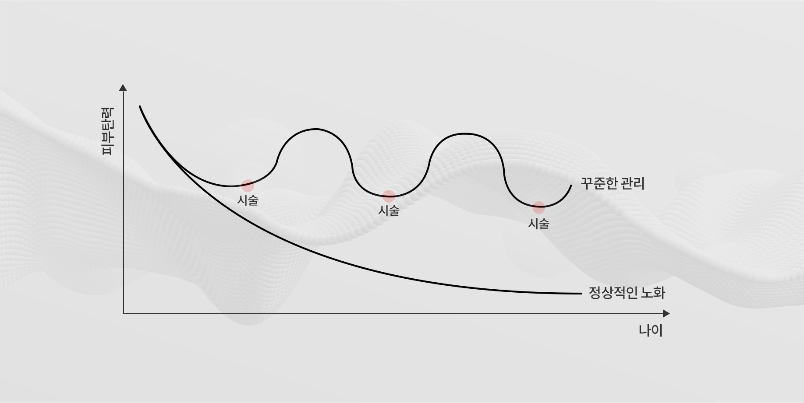
노화가 진행되면서 처짐현상이 발생한 얼굴조직에 Lift (끌어올리다) 의 목적성만을 가지고 시술하지 않고,
꺼진 부분은 채워가며 컴팩트하고 매끈한 얼굴형을 만들기 위해 컨투어링 (외형형성) 작업을 진행합니다.
처진 피부를 끌어올리는 한번의 시술로 일시적이고 단기간의 효과를 내지 않고, 안티에이징 관리의 선순환과 지속가능한
관리가 가능하도록 도와드리는것이 픽미홀딩스의 페이스리프팅의 차별성 입니다.픽미홀딩스 리프팅 철학
CONTOURINGLIFTING피부 탄력을 올리고
처진부위는 올리다FILLING꺼진부위를 채우고EDITING피부고민은 줄이다
고민부위는 다듬다FRIMING피부 탄력을 높이다 -
연령과 고민에 맞는 시술
고객의 연령과 고민에 따라 시술해야 하는 부위, 리프팅의 방법과 장비도 다릅니다.
20대 ~ 60대 까지의 리프팅은 모두 다른 시술로 표현될만큼 시술의 방법과 장비가 다르며, 시술의 핵심은 시술의 의도파악이 가장 중요합니다.
또한 고객의 나이가 아닌, 피부 나이를 기준으로 알맞은 시술이 진행되어야 합니다.픽미홀딩스는 고객의 니즈를 파악하고 정확한 피부상태를 진단하여 고객에게 필요한 시술을 부위별로 달리하여
최적의 효과를 도출하기 위해 최첨단 장비로 분석 후 1:1 면담시스템을 통해 시술을 진행하고 있습니다.-
20대의 리프팅
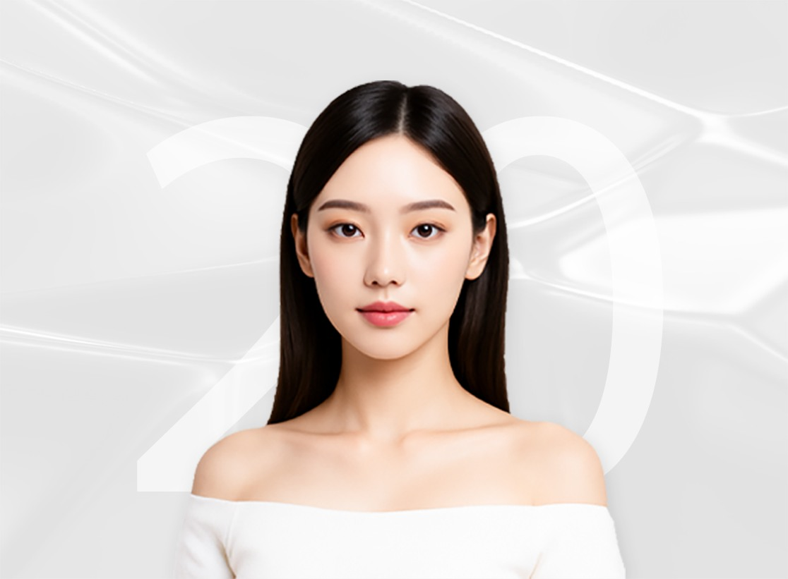
치밀하지 못한 연부조직과 과다한 지방량으로 인해 동그스름한 얼굴형에
지방을 무조건적으로 빼는것이 아닌, 조직의 밀도와 탄력을 높여
컴팩트한 얼굴을 목표로 시술 합니다. -
50대의 리프팅
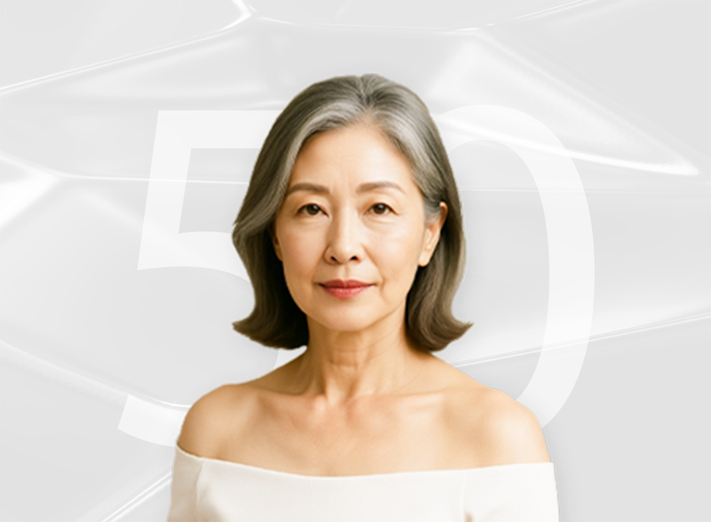
처지고 꺼진 부분을 동시에 해결하기위한 효과적인 시술을 진행함과 동시에
건강한 조직의 재생을 유도하는 시술로 오랫동안 유지가 되고,
부드러운 얼굴 라인을 목표로 시술 합니다.
-
젊음을 되찾기 위한 충분한 에너지와 시술시간
리프팅시술을 기계적인 방법으로 위방향으로 끌어올리는 시술이라고 생각하시는 분들이 많습니다.
피부상태 파악 후 피부 전반적으로 탄력을 잡아주는 시술이 선행되어야 부자연스럽지 않고 유지기간과 효과까지 뛰어난 리프팅 시술이 될 수 있습니다.
결코 피부에 해가 되는 무리한 강도와 재료로 시술을 하지 않습니다.
피부는 다른 특성들을 갖는 총 4-5개의 각기 다른 레이어로 이루어져 있으며 사람마다 레이어의 두께는 모두 다릅니다.
그렇기 때문에 각기 다른 얼굴에 획일적인 시술로 같은 결과를 낼수는 없습니다.
픽미홀딩스는 각각의 레이어에 (통증과 비용을 고려하여) 최적의 효과를 내는 장비들을 보유하고 있어, 고객의 고민과 상태에 맞는 맞춤형 시술을 진행 합니다.
리프팅 장비는 의료장비로 허가난 장비이며 전단계 모두 의료진이 시술하고 있습니다.
픽미홀딩스의 페이스리프팅
튠페이스, 올리지오X, 인모드, 슈링크, 듀엣 RF 써마지
-
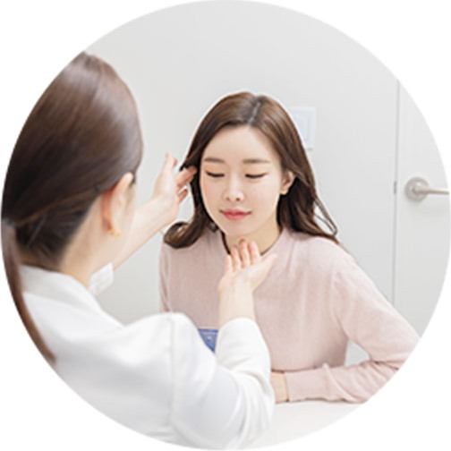
상담부터 시술까지
동일 대표원장 시술 -
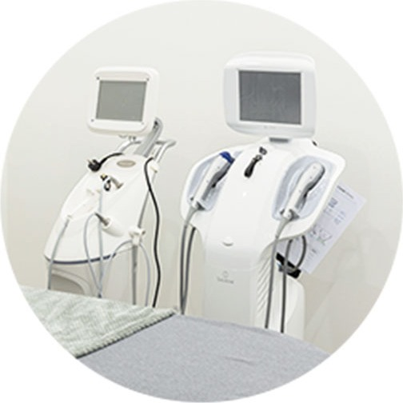
의료진 장비점검을 총한
최상의 장비 컨디션 -
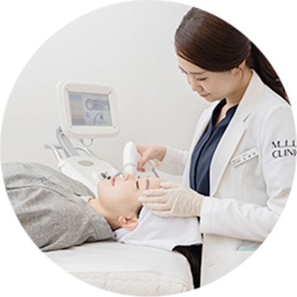
정품 & 정샷 시술 후
시술과정 확인 -
대표원장의
풍부한 시술경험
페이스리프팅 시술부위
당신의 아름다움을 위해 1:1면담부터
맞춤 시술까지 책임을 다하겠습니다
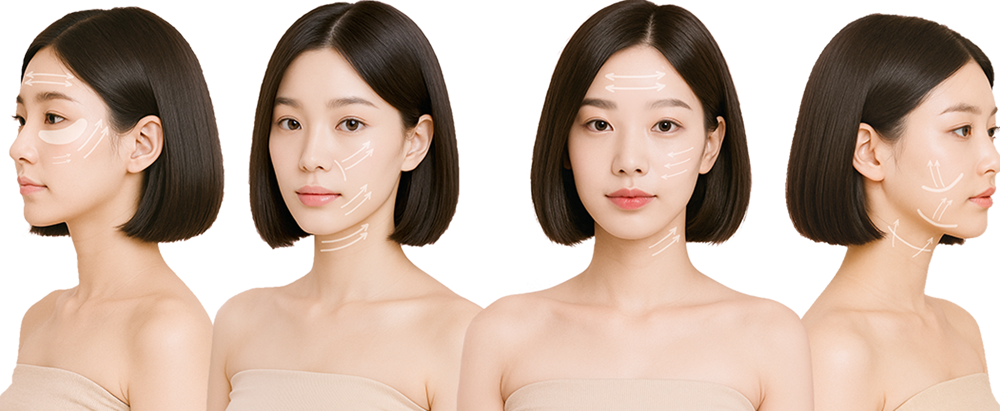
- 듀엣 RF 써마지
고주파 리프팅으로 진피층의 콜라겐 세포 활성화
주름과 피부탄력에 효과 - 실 리프팅
실 을 이용하여
물리적으로 시술 부위를 당겨주는 리프팅 - 슈링크
초음파 리프팅으로 위로 올려주는 리프팅이 아닌
얼굴을 조여 작아지게 하며 잔주름 개선 - 인모드
고주파 리프팅 으로
지방분해 + 피부결 + 모공개선
- 팔자주름
1 실을 이용한 피부 리프팅
2 초음파를 이용한 스마스 (SMAS)층으로 탄력 유도 - 입가주름
1 고주파를 이용한 진피, 피하지방층 자극으로 잔주름 완화
2 초음파를 이용한 스마스 (SMAS)층으로 탄력 유도 - 볼살처짐
1 실을 이용한 피부 리프팅
2 초음파를 이용한 스마스 (SMAS)층으로 탄력 유도 - 턱라인 / 이중턱 처짐
1 실을 이용한 처진 조직 리프팅
2 고주파에너지를 이용한 지방분해 & 탄력증가
페이스리프팅 시술단계
당신의 아름다움을 위해 1:1면담부터
맞춤 시술까지 책임을 다하겠습니다
-
1:1 상담
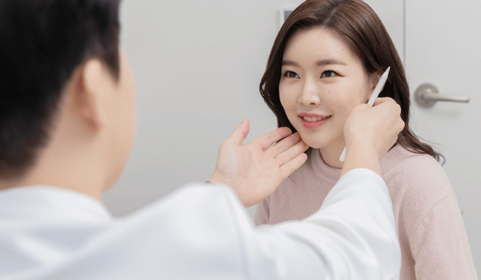
고객 얼굴 상태관찰 / 이전 시술경험과 효과 및 부작용 면밀 분석
고객의 원하는 사항과 우려사항에 대한 파악, 한계점에 대한 상세 설명 -
클렌징 및 전관리
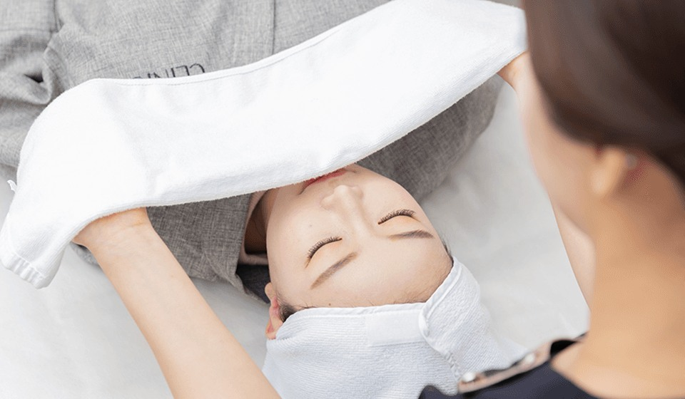
효과적인 시술을 위한 클렌징 및 전관리 단계
-
시술
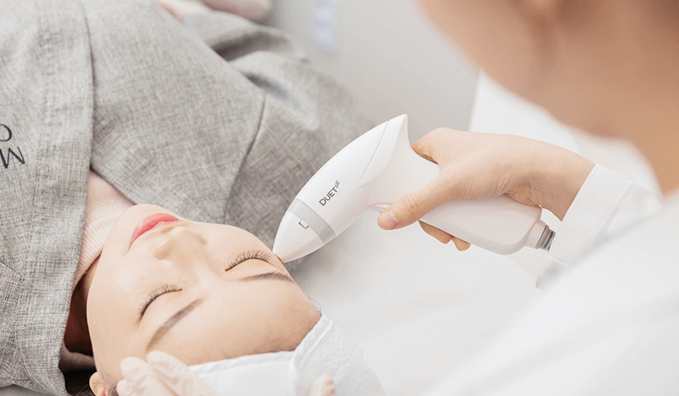
개개인에 맞는 얼굴의 골격, 지방의 분포, 근육의 움직임, 동적 주름등 파악
적절한 장비의 강도와 투입 에너지량 선정 -
후관리 및 마무리
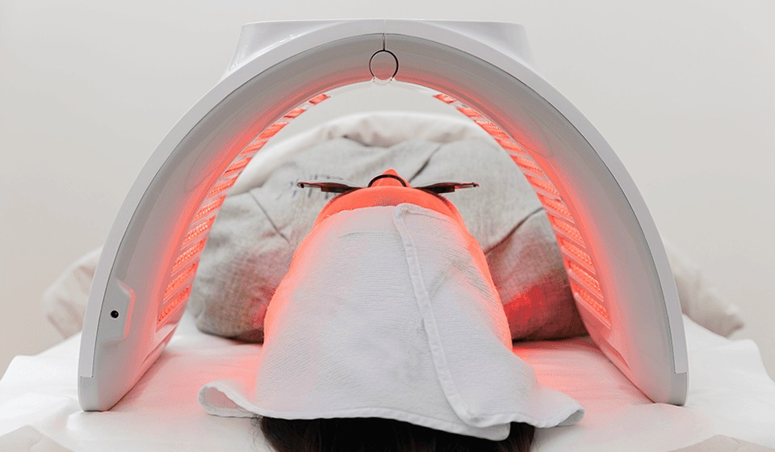
진정관리 및 시술 마무리
시술 후 주의사항 안내
시술 추천 프로그램
아름다움을 위한 픽미홀딩스의 디테일은
원활한 커뮤니케이션 부터 시작 합니다
- 근막을 수축시켜 피부를 당겨올리는 원리를 이용한 풀팁슈링크
- 국소부위의 불필요한 지방을 파괴하여 얼굴선을 되찾아주는 FX
- 양극성 고주파가 발생시키는 열을 이용해 진피층의 콜라겐 재생을 유도하는 FORMA
- 고주파 에너지가 콜라겐 활성화와 재생성을 촉진시키는 듀엣 RF
- 섬세한 디자인으로 국소부위 콜라겐 생성을 증폭하는 PDO 실 타이트닝
- 노화된 조직과 지방을 재배치 시켜주는 코그실 리프팅
- 표피조직 타이트닝으로 리프팅시술효과를 배가시켜주는 더모톡신
- 국소 부위 지방조직 파괴와 얼굴 림프순환을 용이하게 해 붓기관리를 돕는 픽미컷 주사
- 안면비대근육으로 인한 얼굴라인을 다듬은 퀵V 라인 주사 패키지
- 세포운동 활성화를 통해 피부탄력을 강화시켜주는 저자극 LDM 물방울 리프팅
-
처진 피부의 탄력을 살리고꺼진부분의 볼륨은 채워 피부 나이를 되찾다
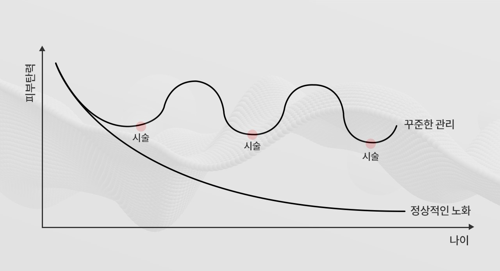
노화가 진행되면서 처짐현상이 발생한 얼굴조직에 Lift (끌어올리다) 의 목적성만을 가지고 시술하지 않고, 꺼진 부분은 채워가며 컴팩트하고 매끈한 얼굴형을 만들기 위해 컨투어링 (외형형성) 작업을 진행합니다. 처진 피부를 끌어올리는 한번의 시술로 일시적이고 단기간의 효과를 내지 않고, 안티에이징 관리의 선순환과 지속가능한 관리가 가능하도록 도와드리는것이 픽미홀딩스의 페이스리프팅의 차별성 입니다.
-
픽미홀딩스 리프팅 철학
CONTOURINGLIFTING피부 탄력을 올리고
처진부위는 올리다FILLING꺼진부위를 채우고EDITING피부고민은 줄이다
고민부위는 다듬다FRIMING피부 탄력을 높이다연령과 고민에 맞는 시술
고객의 연령과 고민에 따라 시술해야 하는 부위, 리프팅의 방법과 장비도 다릅니다. 20대 ~ 60대 까지의 리프팅은 모두 다른 시술로 표현될만큼 시술의 방법과 장비가 다르며, 시술의 핵심은 시술의 의도파악이 가장 중요합니다. 또한 고객의 나이가 아닌, 피부 나이를 기준으로 알맞은 시술이 진행되어야 합니다.
픽미홀딩스는 고객의 니즈를 파악하고 정확한 피부상태를 진단하여 고객에게 필요한 시술을 부위별로 달리하여 최적의 효과를 도출하기 위해 최첨단 장비로 분석 후 1:1 면담시스템을 통해 시술을 진행하고 있습니다.
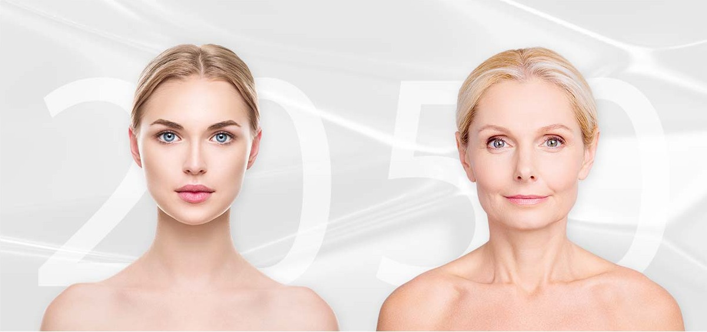
20대의 리프팅치밀하지 못한 연부조직과 과다한 지방량으로 인해 동그스름한 얼굴형에
지방을 무조건적으로 빼는것이 아닌, 조직의 밀도와 탄력을 높여 컴팩트한
얼굴을 목표로 시술 합니다.50대의 리프팅처지고 꺼진 부분을 동시에 해결하기위한 효과적인 시술을 진행함과 동시에
건강한 조직의 재생을 유도하는 시술로 오랫동안 유지가 되고, 부드러운 얼굴
라인을 목표로 시술 합니다. -
젊음을 되찾기 위한 충분한 에너지와 시술시간
리프팅시술을 기계적인 방법으로 위방향으로 끌어올리는 시술이라고 생각하시는 분들이 많습니다. 피부상태 파악 후 피부 전반적으로 탄력을 잡아주는 시술이 선행되어야 부자연스럽지 않고 유지기간과 효과까지 뛰어난 리프팅 시술이 될 수 있습니다. 결코 피부에 해가 되는 무리한 강도와 재료로 시술을 하지 않습니다.
피부는 다른 특성들을 갖는 총 4-5개의 각기 다른 레이어로 이루어져 있으며 사람마다 레이어의 두께는 모두 다릅니다. 그렇기 때문에 각기 다른 얼굴에 획일적인 시술로 같은 결과를 낼수는 없습니다. 픽미홀딩스는 각각의 레이어에 (통증과 비용을 고려하여) 최적의 효과를 내는 장비들을 보유하고 있어, 고객의 고민과 상태에 맞는 맞춤형 시술을 진행 합니다. 리프팅 장비는 의료장비로 허가난 장비이며 전단계 모두 의료진이 시술하고 있습니다.
픽미홀딩스의 페이스리프팅
튠페이스, 올리지오X, 인모드, 슈링크, 듀엣 RF 써마지
-
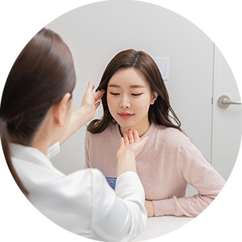
상담부터 시술까지
동일 대표원장 시술 -
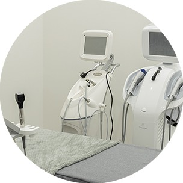
의료진 장비점검을 총한
최상의 장비 컨디션 -
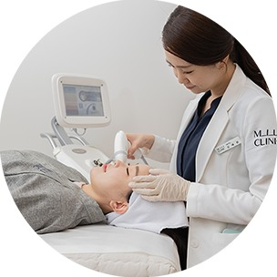
정품 & 정샷 시술 후
시술과정 확인 -
대표원장의
풍부한 시술경험
-
-
페이스리프팅 시술부위
당신의 아름다움을 위해 1:1면담부터
맞춤 시술까지 책임을 다하겠습니다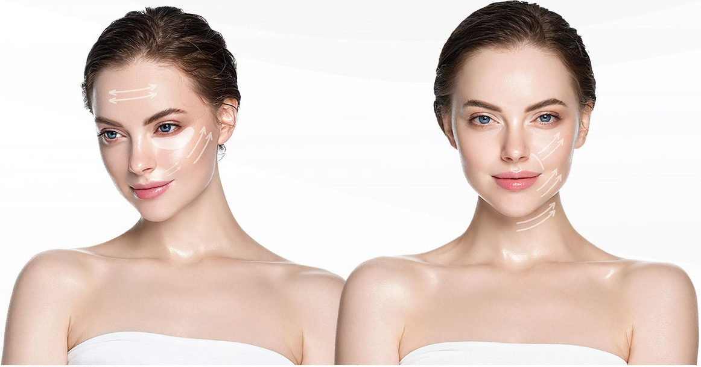
- 듀엣 RF 써마지
고주파 리프팅으로 진피층의
콜라겐 세포 활성화 주름과 피부탄력에 효과 - 실 리프팅
실 을 이용하여
물리적으로 시술 부위를 당겨주는 리프팅
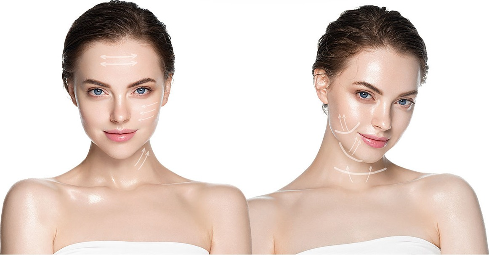
- 슈링크
초음파 리프팅으로 위로 올려주는
리프팅이 아닌 얼굴을 조여
작아지게 하며 잔주름 개선 - 인모드
고주파 리프팅 으로
지방분해 + 피부결 + 모공개선
- 팔자주름
1 실을 이용한 피부 리프팅
2 초음파를 이용한 스마스 (SMAS)층으로 탄력 유도 - 볼살처짐
1 실을 이용한 피부 리프팅
2 초음파를 이용한 스마스 (SMAS)층으로 탄력 유도 - 입가주름
1 고주파를 이용한 진피, 피하지방층 자극으로 잔주름 완화
2 초음파를 이용한 스마스 (SMAS)층으로 탄력 유도 - 턱라인 / 이중턱 처짐
1 실을 이용한 처진 조직 리프팅
2 고주파에너지를 이용한 지방분해 & 탄력증가
- 듀엣 RF 써마지
-
페이스리프팅 시술단계
당신의 아름다움을 위해 1:1면담부터
맞춤 시술까지 책임을 다하겠습니다-
1:1 상담
고객 얼굴 상태관찰 / 이전 시술경험과 효과 및 부작용 면밀 분석
고객의 원하는 사항과 우려사항에 대한 파악, 한계점에 대한 상세 설명 -
클렌징 및 전관리
효과적인 시술을 위한 클렌징 및 전관리 단계
-
시술
개개인에 맞는 얼굴의 골격, 지방의 분포, 근육의 움직임, 동적 주름등 파악
적절한 장비의 강도와 투입 에너지량 선정 -
후관리 및 마무리
진정관리 및 시술 마무리, 시술 후 주의사항 안내
-
1:1 상담
-
시술 추천프로그램
아름다움을 위한 픽미홀딩스의 디테일은
원활한 커뮤니케이션 부터 시작 합니다- 근막을 수축시켜 피부를 당겨올리는 원리를 이용한 풀팁슈링크
- 국소부위의 불필요한 지방을 파괴하여 얼굴선을 되찾아주는 FX
- 양극성 고주파가 발생시키는 열을 이용, 진피층의 콜라겐 재생을 유도하는 FORMA
- 고주파 에너지가 콜라겐 활성화와 재생성을 촉진시키는 듀엣 RF
- 섬세한 디자인으로 국소부위 콜라겐 생성을 증폭하는 PDO 실 타이트닝
- 노화된 조직과 지방을 재배치 시켜주는 코그실 리프팅
- 표피조직 타이트닝으로 리프팅시술효과를 배가시켜주는 더모톡신
- 국소 부위 지방조직 파괴와 얼굴 림프순환을 통해 붓기관리를 돕는 픽미컷 주사
- 안면비대근육으로 인한 얼굴라인을 다듬은 퀵V 라인 주사 패키지
- 세포운동 활성화로 피부탄력을 강화시켜주는 저자극 LDM 물방울 리프팅